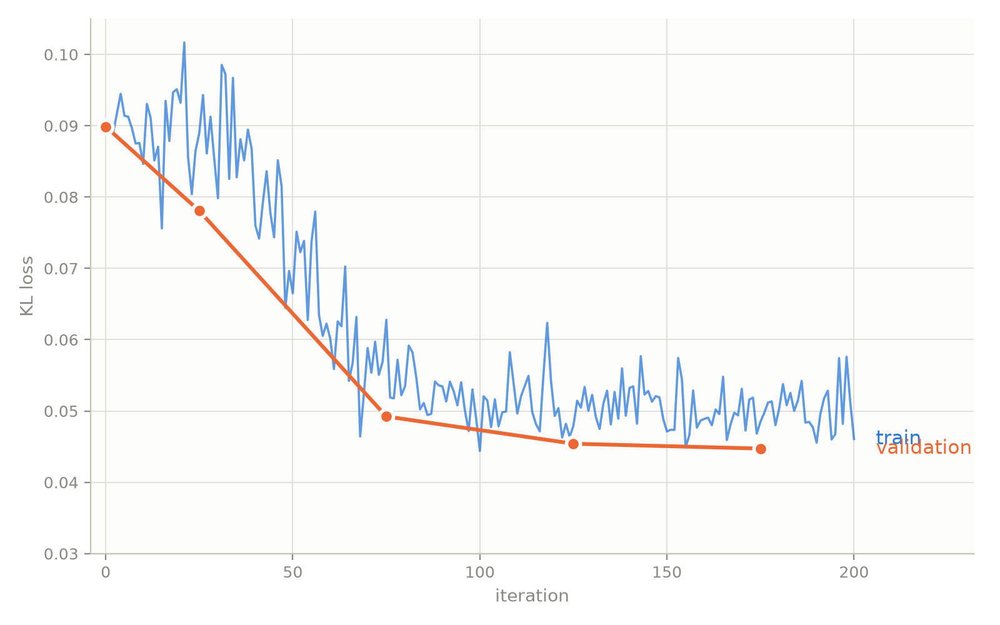

Scale Learning: Training NVFP4 Block Scales to Recover Accuracy#
- Author:
Model Optimizer Team
- Date:
September 16, 2026
- Tags:
scale-learning, quantization, nvfp4, qad, modelopt
How we set scales in blockwise quantization plays an important role in determining the quality of the quantized model. In this blog we introduce scale learning, which makes NVFP4 per-block scales trainable parameters and learns optimal per-block scales through a training loop.
There are two types of scale learning: scale-only learning and full parameter scale learning. In scale-only learning, we train only scales and leave weights frozen. We can think of this as an enhancement of scale setting methods based on search like MSE or Local-Hessian, where we use scale setting to initialize scales, and then run scale-only learning to further optimize them.
In full parameter scale learning, we co-train scales and weights together. This can serve as an enhancement of traditional Quantization-Aware Distillation (QAD) with additional trainable parameters.
How Scale Learning Works#
The idea of scale learning is to make the NVFP4 per-block scales trainable. We need to be able to compute the gradient of a loss function \(L\) with respect to a per-block scale \(s\) via backpropagation. We use the usual QAT approach, where we do fake-quantization in the forward pass and backpropagate with straight-through estimators. During a forward pass, instead of a weight \(x\) we use a fake-quantized weight \(\tilde{x}\), given by
Here \(x\) is a single weight and \(s\) its corresponding scale (omitting the global scale for simplicity). In NVFP4 [1], every block of sixteen weights shares a single scale, \(q_{\min}\) and \(q_{\max}\) are \(-6\) and \(6\) respectively, and \(\operatorname{round}\) rounds to the nearest E2M1 value.
To train the scale we need \(\partial L/\partial s\), which we can compute via the chain rule:
\(\partial L/\partial \tilde{x}\) can be computed via backpropagation the usual way in neural network training. To compute \(\partial\tilde{x}/\partial s\) we use a straight-through estimator: the derivative of \(\operatorname{round}\) is taken to be 1. Applying the product rule to \(s \cdot \operatorname{round}\!\left(\tfrac{x}{s}\right)\) then yields
This is the general idea, although it is slightly more complicated since the scale \(s\) is also quantized (to FP8), so we have to apply straight-through estimators there as well.
We also have a version of scale learning with “dual scales”, where during fake quantization the scale we divide by (the “pre-scale”) and the scale we later multiply by (the “post-scale”) are independent. In other words,
Then we can compute partial derivatives the same way as before, and obtain
and
During export, the post-scale is baked into the checkpoint and the pre-scale is discarded.
ModelOpt implements both forms via the
lsq API [2]. In the
implementation we reparameterize the trained quantity as amax rather than
the scale itself.
The field tied_amax controls whether we have dual scales or a single “tied”
scale. (i.e. we set tied_amax: false for dual scales).
Results#
Nemotron 3.5 Lightning#
Scale-only learning can significantly improve accuracy of NVFP4 quantized Nemotron 3.5 Lightning. In this example, the PTQ recipe is W4A4 routed experts and W8A8 attention and Mamba cache, using MSE for scale setting.
After PTQ, we run scale-only QAD. Plotting the train and validation loss, we see stable convergence:


Table 1 compares scale-only learning against the PTQ baseline on Nemotron 3.5 Lightning, with the BF16 model as reference, on various benchmarks.
Method |
GPQA Diamond (w/o tools) (x8) |
SciCode (x8) |
AA-LCR (x16) |
HLE (w/o tools) |
Tau2 Telecom (x8) |
Tau3 Banking (x5) |
|---|---|---|---|---|---|---|
BF16 reference |
76.45 |
32.51 |
52.38 |
17.47 |
59.65 |
9.897 |
PTQ |
73.3 |
33.42 |
47.38 |
9.361 |
59.43 |
7.216 |
Scale-only learning |
75 |
35.42 |
51.44 |
10.19 |
61.07 |
7.216 |
Table 1: Nemotron 3.5 Lightning, PTQ versus scale-only learning. All scores are accuracy in percent, higher is better.
Recommendations#
In general, we have found that scale-only learning is a highly useful technique and outperforms traditional scale setting methods and recovers more accuracy, across a variety of models and contexts. It improves accuracy more consistently than QAD, which can cause regressions on benchmarks as the weights shift during training. Full parameter scale learning can outperform ordinary QAD (i.e. with frozen scales) for many models in our experiments, but doesn’t work for all models.
A higher learning rate is needed for scales: we recommend 1e-4. A smaller number of steps (sometimes just 50) is needed for scale-only learning to converge compared to QAT/QAD. Dual scales sometimes outperforms tied scales, but for other models can cause distribution shift where tied scales improves accuracy: neither is universally better.
Using Scale Learning#
Scale learning is a training-time algorithm: the scales are learnt during QAT/QAD, so these recipes are not usable as calibration-only PTQ. Scale-only learning involves 1/16th as many trainable parameters as regular QAT/QAD, so it uses a sixteenth of the gradient state and optimizer memory. Since we need to still compute all partial derivatives with respect to the fake-quant weights, the compute requirement is the same (although we tend to need fewer steps for scale-only learning).
After scales are learnt, there is no deployment cost – learned scales are folded into the exported checkpoint and are the same FP8 block scales the format already carries, so the deployed graph is unchanged.
To use it in your own configuration, set the algorithm field:
import modelopt.torch.quantization as mtq
config = {
"quant_cfg": [...], # quantizer configuration
"algorithm": {
"method": "lsq",
"learnable_amax": ["pre", "post"],
"tied_amax": True,
"scale_algorithm": {"method": "mse", "fp8_scale_sweep": True},
},
}
model = mtq.quantize(model, config, forward_loop)
See Quantization Configuration (quant_cfg) for how to write the quant_cfg field, and the
lsq API for the
calibration entry point.
This call configures fake quantization and initializes the learnable scales; it does not train them. Continue with QAT or QAD, updating only scale parameters for scale-only learning or both weights and scales for full parameter scale learning.
The shipped recipes cover the two variants:
modelopt_recipes/general/qad/nvfp4_lsq-mse_init-fp8_kv.yaml— one shared pre- and post-quantization scale.modelopt_recipes/general/qad/nvfp4_dual_lsq-mse_init-fp8_kv.yaml— separate pre- and post-quantization scales.
With the examples/llm_qat entry points, run from that directory:
# 1. Quantize. The LSQ recipe initializes the block scales with MSE and
# installs the learnable amax parameters.
python quantize.py \
--model_name_or_path Qwen/Qwen3-8B \
--dataset_config configs/dataset/blend.yaml \
--recipe general/qad/nvfp4_lsq-mse_init-fp8_kv \
--output_dir qwen3-8b-lsq-quantized
# 2. Scale-only learning. Trains just the amax parameters installed above,
# distilling from the BF16 model.
accelerate launch --config-file configs/accelerate/fsdp2.yaml train.py \
--config configs/train/qad_scale_only.yaml \
--model_name_or_path qwen3-8b-lsq-quantized \
--teacher_model Qwen/Qwen3-8B \
--output_dir qwen3-8b-scale-only
# 3. Export for deployment.
python export.py \
--pyt_ckpt_path qwen3-8b-scale-only \
--export_path qwen3-8b-scale-only-deploy
For full parameter scale learning, swap the step 2 config for
configs/train/qad_with_learnt_amax.yaml, which trains weights and scales
together. For dual scales, swap the step 1 recipe for
general/qad/nvfp4_dual_lsq-mse_init-fp8_kv.
Next steps#
Current Model-Optimizer scale learning implementation only applies to NVFP4 per-block weight scales. In the future, we can apply the idea of scale learning to global weight scales, or (global) input activation scales. There is potential to optimize these through training as well.